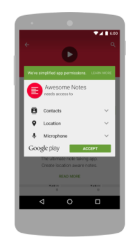
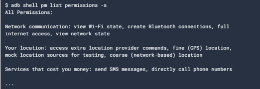

Contenido:
Descripción general de los permisos
Aprobación de un permiso
Una app debe publicitar los permisos que requiere incluyendo etiquetas <uses-permission> en el manifiesto de la app.
Solicitudes para permisos riesgosos
Solo los permisos riesgosos requieren la aprobación del usuario
Solicitudes de tiempo de ejecución (Android 6.0 y posteriores)
Si el dispositivo tiene instalado Android 6.0 (nivel de API 23) o una versión posterior, y la targetSdkVersion de la app es de nivel 23 o posterior, el usuario no recibirá ninguna notificación de permisos durante la instalación.
Cuando la app solicita un permiso, el usuario ve un diálogo del sistema que le indica a qué grupo de permisos está intentando acceder la app. El diálogo incluye los botones Denegar y Permitir.
Si el usuario rechaza la solicitud de permiso, la próxima vez que la app solicite el permiso, el diálogo incluirá una casilla de verificación que, si se marca, indicará que el usuario no desea que se le vuelva a pedir el permiso.
Solicitudes en el momento de la instalación (Android 5.1.1 y anteriores)
Si el dispositivo tiene instalado Android 5.1.1 (nivel de API 22) o versiones anteriores, o si el atributo targetSdkVersion es 22 o inferior y se ejecuta en cualquier versión de Android, el sistema le pedirá automáticamente al usuario que otorgue todos los permisos riesgosos para tu app en el momento de la instalación
Permisos para funciones de hardware opcionales
Por lo tanto, si tu app solicita el permiso de CAMERA, es importante que también incluyas la etiqueta <uses-feature> en tu manifiesto a fin de declarar si se requiere o no esta función. Por ejemplo:
Permisos únicos
El diálogo de permisos para el usuario contiene una opción llamada Solo esta vez. Si el usuario selecciona esta opción, se le otorgará un permiso único temporal a la app.
Luego la app podrá acceder a los datos relacionados durante un período que dependerá del comportamiento de tu app y de las acciones del usuario:
Aplicación de permisos
Los permisos no solo se utilizan para solicitar funcionalidades del sistema. Los servicios proporcionados por las apps pueden aplicar permisos personalizados para limitar su uso a determinados usuarios.
Aplicación de permisos de actividad
Los permisos aplicados con el atributo android:permission en la etiqueta <activity>, en el manifiesto, fijan restricciones respecto a los usuarios que pueden iniciar esa Activity. Se verifica el permiso durante Context.startActivity() y Activity.startActivityForResult(). Si el emisor no tiene el permiso necesario, la llamada arroja una SecurityException.
Aplicación de permiso de servicio
Los permisos aplicados con el atributo android:permission en la etiqueta <service> del manifiesto fijan restricciones respecto a los usuarios que pueden iniciarlo o vincularlo con el Service asociado. Se verifica el permiso durante Context.startService(), Context.stopService() y Context.bindService(). Si el emisor no tiene el permiso necesario, la llamada arroja una SecurityException.
Aplicación de permiso de emisión
Los permisos aplicados con el atributo android:permission en la etiqueta <receiver> fijan restricciones respecto de la autorización para enviar transmisiones al BroadcastReceiver asociado. Se controla el permiso después de que se muestra Context.sendBroadcast(), mientras el sistema intenta proporcionar la emisión enviada al receptor en cuestión. En consecuencia, un error de permisos no generará una excepción para el emisor, sino que únicamente no proporcionará el Intent.
Aplicación de permisos de proveedor de contenido
Los permisos aplicados con el atributo android:permission en la etiqueta <provider> fijan restricciones respecto a quiénes pueden acceder a los datos en un ContentProvider.
De la misma manera, se puede suministrar un permiso a Context.registerReceiver() para tener control sobre quiénes pueden realizar transmisiones a un receptor registrado programáticamente. Por otro lado, se puede suministrar un permiso cuando se llama a Context.sendBroadcast() a fin de restringir los objetos receptores de emisión que tienen autorización para recibirla.
Aplicación de permisos de proveedor de contenido
Con el atributo android:permission en la etiqueta <provider> fijan restricciones respecto a quiénes pueden acceder a los datos en un ContentProvider.
Permisos de URI
cuando inicia una actividad o muestra un resultado en una actividad, el emisor puede establecer Intent.FLAG_GRANT_READ_URI_PERMISSION o Intent.FLAG_GRANT_WRITE_URI_PERMISSION.
Esto otorga a la actividad receptora permisos de acceso al URI de datos específico en el intent, independientemente de que tenga permiso para acceder a los datos en el proveedor de contenido correspondiente al intent.
Para crear la implementación más segura que permita a otras apps tomar la responsabilidad de sus acciones dentro de tu app, debes usar permisos específicos de esta manera y declarar la compatibilidad de la app con el atributo android:grantUriPermissions o la etiqueta <grant-uri-permissions>.
Aplicación de otros permisos
Se pueden aplicar los permisos específicos arbitrarios a un servicio, en cualquier llamada, lo que se logra con el método Context.checkCallingPermission() la cual realiza una llamada con la string de permiso, que mostrará un número entero que indicará si se otorgó ese permiso al proceso de llamada actual.
Si se tiene el ID de otro proceso (PID), puedes usar el método contextual Context.checkPermission() para verificar un permiso según ese PID.
Si se tiene el nombre del paquete de otra app, puedes usar el método PackageManager.checkPermission() para averiguar si se le otorgó un permiso específico a ese paquete en particular.
Permisos de restablecimiento automático de apps que no se usan
Si la app está orientada a Android 11 (nivel de API 30) o a versiones posteriores y no se usó durante algunos meses, el sistema restablecerá automáticamente los permisos de tiempo de ejecución sensibles que el usuario otorgó a la app a fin de proteger sus datos
Cómo solicitar al usuario que inhabilite el restablecimiento automático
Esto es útil en situaciones en las que los usuarios esperan que tu app funcione principalmente en segundo plano, incluso sin interactuar con ella, como en los siguientes casos prácticos:
· Para brindar contenido apto para todo público
· Para sincronizar datos
· Para comunicarse con dispositivos inteligentes
· Para vincularse con dispositivos complementarios
Para direccionar al usuario a la página de la app en la configuración del sistema, invoca un intent que incluya la acción de intent Intent.ACTION_AUTO_REVOKE_PERMISSIONS.
Desde esta pantalla, los usuarios pueden evitar que el sistema restablezca los permisos de tu app de la siguiente manera:
1. Presiona la opción Permissions, que carga la pantalla de configuración App permissions.
2. Desactiva la opción Remove permissions if app isn't used.
Cómo determinar si el restablecimiento automático está inhabilitado
Para comprobar si la función de restablecimiento automático está inhabilitada, llama a isAutoRevokeWhitelisted(). Si este método muestra true, el sistema no restablece automáticamente los permisos de la app.
Cómo probar la función de restablecimiento automático
A fin de verificar si el sistema restablece los permisos de tu app, haz lo siguiente:
1. Registra el tiempo predeterminado que el sistema espera para restablecer los permisos de una app. De esa manera, puedes restablecerla después de realizar las pruebas:
2. Reduce el tiempo que el sistema espera para restablecer los permisos. En el siguiente ejemplo, se modifica el sistema de manera que restablezca los permisos de una app solo un segundo después de que dejas de interactuar con ella:
3. Invoca el proceso de restablecimiento automático de forma manual, como se muestra en el siguiente fragmento. Antes de ejecutar este comando, asegúrate de que se haya activado durante unos segundos el dispositivo de prueba.
4. Verifica que tu app pueda controlar el evento de restablecimiento automático.
5. Restablece el tiempo predeterminado que el sistema espera antes de restablecer automáticamente los permisos de una app:
Otorgamientos automáticos de permisos nuevos
· Las apps existentes suponen que el acceso a esas API es libre, Android puede implementar la solicitud del permiso nuevo en el manifiesto de la app para evitar dañarla en la versión nueva de la plataforma (por lo tanto, permite que tu app herede el permiso).
· Android toma las decisiones relacionadas con el hecho de que una app podría necesitar el permiso según el valor indicado para el atributo targetSdkVersion. Si el valor es inferior al de la versión en la cual el permiso se agregó, Android agregará el permiso.
Niveles de protección
Los permisos se dividen en varios niveles de protección. El nivel de protección determina si se necesitan solicitudes de permiso de tiempo de ejecución.
Hay tres niveles de protección que afectan a apps de terceros: permisos normales, de firma y riesgosos.
Permisos especiales
Un par de permisos no se comportan como normales ni riesgosos. SYSTEM_ALERT_WINDOW y WRITE_SETTINGS son particularmente sensibles; por ello, la mayoría de las apps no deben usarlos.
El permiso SYSTEM_ALERT_WINDOW en el manifiesto y enviar un intent en el que se solicite la autorización del usuario. El sistema responde al intent mostrando una pantalla de administración detallada al usuario.
Grupos de permisos
Los permisos se organizan en grupos relacionados con las capacidades o funciones de un dispositivo.
En este sistema, las solicitudes de permisos se controlan a nivel grupal y un grupo de permisos individual corresponde a varias declaraciones de permisos en el manifiesto de la app. Por ejemplo, el grupo de SMS incluye las declaraciones READ_SMS y RECEIVE_SMS. Agrupar permisos de esta manera permite al usuario tomar decisiones más significativas y fundamentadas sin verse abrumado por solicitudes de permisos complejas y técnicas.
Si el dispositivo tiene Android 6.0 (nivel de API 23) instalado y el atributo targetSdkVersion de la app es 23 o un valor superior, el siguiente comportamiento del sistema tiene lugar cuando tu app solicita un permiso riesgoso:
· Si la app no tiene permisos actualmente en el grupo de permisos, el sistema mostrará al usuario el diálogo de solicitud de permiso en el que se describe el grupo de permisos al cual la app desea acceder. En diálogo, no se describe el permiso específico dentro de ese grupo.
Por ejemplo, si una app solicita el permiso READ_CONTACTS, el diálogo del sistema solo indicará que la app necesita acceder a los contactos del dispositivo. Si el usuario brinda la aprobación, el sistema otorgará a la app solamente el permiso que solicitó.
· Si la app ya tiene otro permiso riesgoso en el mismo grupo de permisos, el sistema otorgará de inmediato el permiso, sin interactuar con el usuario.
Por ejemplo, si a una app ya se le otorgó el permiso READ_CONTACTS y, luego, esta solicita el permiso WRITE_CONTACTS, el sistema lo otorga de inmediato sin mostrar el diálogo de permisos al usuario.
Cómo ver los permisos de una app
Puedes ver todos los permisos definidos actualmente en el sistema usando la app de Configuración y el comando de shell adb shell pm list permissions. Para usar la app de Configuración, ve a Configuración > Apps. Elige una app y desplázate hacia abajo para ver los permisos que usa. Para los desarrolladores, la opción "-s" de la herramienta adb muestra los permisos con un aspecto similar al que observarán los usuarios:

Además, puedes usar la opción -g de adb para otorgar automáticamente todos los permisos cuando instales una app en un emulador o un dispositivo de prueba:
Solicita permisos de la app
Para declarar que la app necesita un permiso, debes incluirlo en el manifiesto de la app y, luego, solicitar al usuario que apruebe cada permiso durante el tiempo de ejecución (en Android 6.0 y versiones posteriores).
Los principios básicos son los siguientes:
· Solicita permisos en contexto cuando el usuario comience a interactuar con la función que lo requiere.
· No bloquees al usuario. Proporciona siempre la opción de cancelar un flujo de IU educativo relacionado con los permisos.
· Si el usuario rechaza o revoca un permiso que necesita una función, debes realizar una degradación elegante de tu app para que pueda seguir usándola; para ello, puedes inhabilitar la función que requiere el permiso.
· No des por sentado ningún comportamiento del sistema.
Agrega permisos al manifiesto
En todas las versiones de Android, para declarar que la app necesita un permiso, coloca un elemento <uses-permission> en el manifiesto como elemento secundario del elemento <manifest> de nivel superior.
Verifica si tu app tiene permisos
Si tu app necesita un permiso riesgoso, deberás verificar si tienes ese permiso cada vez que realices una operación que lo requiera. En Android 6.0 (nivel 23 de API) y versiones posteriores, los usuarios pueden revocar permisos riesgosos desde cualquier app en cualquier momento.
Determina si tu app ya recibió el permiso
Para verificar si el usuario ya otorgó un permiso en particular a tu app, pasa ese permiso al método ContextCompat.checkSelfPermission(). Este método muestra PERMISSION_GRANTED o PERMISSION_DENIED, según si tu app tiene el permiso o no.
Explica el motivo por el que la app necesita el permiso
Si el método ContextCompat.checkSelfPermission() muestra PERMISSION_DENIED, llama a shouldShowRequestPermissionRationale(). Si este método muestra true, enseña una IU educativa al usuario. En esta IU, describe por qué la función que el usuario quiere habilitar necesita un permiso en particular.
Solicita permisos
Después de que el usuario vea una IU educativa, o de que el valor que muestra shouldShowRequestPermissionRationale() indique que esta vez no necesitas mostrar una IU educativa, solicita el permiso. Los usuarios ven un diálogo de permisos del sistema en el que pueden elegir si desean otorgar un permiso en particular a tu app.
Permite que el sistema administre el código de solicitud de permiso
Para permitir que el sistema administre el código de solicitud asociado a una solicitud de permisos, agrega una dependencia en la biblioteca androidx.activity del archivo build.gradle de tu módulo. Usa la versión 1.2.0 o posterior de la biblioteca.
Luego puedes usar una de las siguientes clases:
· Para solicitar un solo permiso, usa RequestPermission.
· Para solicitar varios permisos al mismo tiempo, usa RequestMultiplePermissions.
En los siguientes pasos, se muestra cómo usar el contrato RequestPermission. El proceso es casi el mismo para el contrato RequestMultiplePermissions.
1. En la lógica de inicialización de tu actividad o fragmento, pasa una implementación de ActivityResultCallback a una llamada a registerForActivityResult(). La interfaz ActivityResultCallback define el modo en el que tu app controla la respuesta del usuario a la solicitud de permiso.
2. Mantén una referencia al valor que muestra registerForActivityResult(), que es del tipo ActivityResultLauncher.
Para mostrar el diálogo de permisos del sistema cuando sea necesario, llama al método launch() en la instancia de ActivityResultLauncher que guardaste en el paso anterior.
Administra por tu cuenta el código de solicitud de permiso
En lugar de permitir que el sistema administre el código de solicitud de permiso, puedes administrarlo por tu cuenta como alternativa. Para hacerlo, incluye el código de solicitud en una llamada a requestPermissions().
Una vez que el usuario responde al diálogo de permisos del sistema, este invoca la implementación de onRequestPermissionsResult() de tu app. El sistema pasa la respuesta del usuario al diálogo de permisos, así como el código de solicitud que definiste, como se muestra en el siguiente fragmento de código:
Controla la denegación de permisos
Si el usuario rechaza una solicitud de permiso, tu app debe ayudar a los usuarios a comprender las implicaciones de esta denegación. En particular, tu app debe informar a los usuarios sobre las funciones que no se pueden usar debido a la falta de permiso. Cuando lo hagas, ten en cuenta las siguientes recomendaciones:
· Orienta la atención del usuario. Destaca una parte específica de la IU de tu app en la que la funcionalidad sea limitada porque no tiene los permisos necesarios. Estos son algunos ejemplos de lo que puedes hacer:
ü Muestra un mensaje en el que habrían aparecido los resultados o los datos de la función.
ü Muestra un botón diferente que contenga un ícono y un color de error.
· Brinda información específica. No muestres un mensaje genérico; en su lugar, menciona qué funciones no están disponibles porque tu app no tiene el permiso necesario.
· No bloquees la interfaz de usuario. En otras palabras, no muestres un mensaje de advertencia de pantalla completa que impida a los usuarios seguir usando tu app.
Solicita la conversión a controlador predeterminado si es necesario
Si quieres solicitar los permisos específicos para registros de llamadas y mensajes SMS, y publicar tu app en Play Store, debes solicitar al usuario que configure tu app como controlador predeterminado para una función principal del sistema antes de solicitar estos permisos de tiempo de ejecución.
Declara permisos por nivel de API
Para declarar permisos únicamente en dispositivos que admiten permisos durante el tiempo de ejecución (es decir, que ejecuten Android 6.0 [nivel 23 de API] o versiones posteriores), debes incluir la etiqueta uses-permission-sdk-23 en lugar de uses-permission.
Cuando usas cualquiera de estas etiquetas, puedes establecer el atributo maxSdkVersion para especificar que, en dispositivos que ejecutan versiones posteriores, no se necesita ningún permiso en particular.
Recomendaciones sobre los permisos de la app
Las solicitudes de permisos protegen la información sensible de un dispositivo y solo deben usarse cuando el acceso a la información es necesario para el funcionamiento de tu app.
Para obtener un panorama general sobre los permisos de Android, consulta la descripción general de permisos.
Principios básicos del trabajo con permisos de Android
Te recomendamos que sigas estos principios básicos cuando trabajes con permisos de Android:
N°1: Solo usa los permisos necesarios para el funcionamiento de tu app.
N°2 Presta atención a los permisos que se requieren para las bibliotecas.
N° 3: Sé transparente.
N° 4: Explicita los accesos al sistema.
Como definir un permiso de app personalizado
Contexto:
Las apps pueden exponer su funcionalidad a otras apps.
También pueden definir permisos que se ponen automáticamente a disposición de cualquier otra app que este firmada con el mismo certificado.
Firma de apps:
Este certificado identifica al autor de la app, no es necesario que el certificado este firmado por una autoridad.
ID de usuario y acceso a archivos:
Todos los datos almacenados por una app recibirán el ID de usuario de esa app y en general no serán accesibles para otros paquetes.